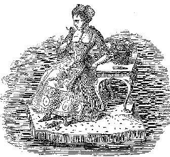

Page contentgoes here.
The Art of Perfumery and method of obtaining the Odorors of plants
with instructions for the manufacture of perfumes for the handkerchief, scented powders, odorous vinegars,
dentifrices, pomatums, cosmetiques, perfumed soap, etc.
with an appendix on the colors of flowers, artificial fruit essences, etc. etc.

[image]
by g.w. septimus piesse,
author of The Odors of Flowers, etc. etc.
Tooth Powders and Mouth Washes
Tooth powders, regarded as a means merely of cleansing the teeth, are most commonly placed among cosmetics;
but
this should not be, as they assist greatly in preserving a healthy and regular condition of the dental
machinery, and so aid in perfecting as much as possible the act of mastication. In this manner, they may be
considered as most useful, although it is true, subordinate medicinal agents. By a careful and prudent use
of
them, some of the most frequent causes of early loss of the teeth may be prevented; these are, the
deposition of
tartar, the swelling of the gums, and an undue acidity of the saliva. The effect resulting from accumulation
of
the tartar is well known to most persons, and it has been distinctly shown that swelling of the substance of
the
gums will hasten the expulsion of the teeth from their sockets; and the action of the saliva, if unduly
acid, is
known to be at least injurious, if not destructive.
Now, the daily employment of a tooth powder sufficiently hard, so as to exert a tolerable degree of friction
upon the teeth, without, at the same time, injuring the enamel of the teeth, will, in most cases, almost
always
prevent the tartar accumulating in such a degree as to cause subsequent injury to the teeth; and a flaccid,
spongy, relaxed condition of the gums may be prevented or overcome by adding to such a tooth powder, some
tonic
and astringent ingredient. A tooth powder containing charcoal and cinchona bark, will accomplish these
results
in most cases, and therefore dentists generally recommend such. Still, there are objections to the use of
charcoal; it is too hard and resisting, its color is objectionable, and it is perfectly insoluble by the
saliva,
it is apt to become lodged between the teeth, and there to collect decomposing animal and vegetable matter
around such particles as may be fixed in this position. Cinchona bark, too, is often stringy, and has a
bitter,
disagreeable taste.
Tooth Powders
Camphorated Chalk Powder
Precipitated chalk, 1 lb.
Powdered orris-root, 1/2 lb.
Powdered camphor, 1/4 lb.
Reduce the camphor to powder by rubbing it in a mortar with a little spirit, then sift the whole well
together.
On account of the volatility of camphor, the powder should always be sold in bottles, or at least in
boxes
lined
with tinfoil.
Quinine Tooth Powder
Precipitated chalk, 1 lb.
Starch Powder, 1/2 lb.
Orris powder, 1/2 lb.
Sulphate of quinine, 1 drachm.
After sifting, it is ready for sale.
Prepared Charcoal Powder
Fresh-made charcoal in fine powder, 7 lbs.
Prepared chalk, 1 lb.
Orris-root, 1 lb.
Catechu, 1/2 lb.
Cassia bark, 1/2 lb.
Myrrh, 1/4 lb.
Sift.
Mouth Washes
Eau Botot Wash
Tincture of cedar wood, 1 pint.
Tincture of myrrh, 1/4 pint.
Tincture of rhatany, 1/4 pint.
Otto of peppermint, 5 drops.
All these tinctures should be made with grape spirit, or at least with pale unsweetened brandy.
Botanic Styptic Wash
Rectified spirit, 1 quart.
Rhatany root, 2 oz.
Gum myrrh, 2 oz.
Whole cloves, 2 oz.
Macerate for fourteen days, and strain.
Myrrh and Borax Wash
Spirits of wine, 1 quart.
Borax, 1 oz.
Honey, 1 oz.
Gum myrrh, 1 oz.
Red sanders wood, 1 oz.
Rub the honey and borax well together in a mortar, then gradually add the spirit, which should not be
stronger
than .920, i.e. proof spirit, the myrrh, and sanders wood, and macerate for fourteen days.
[video